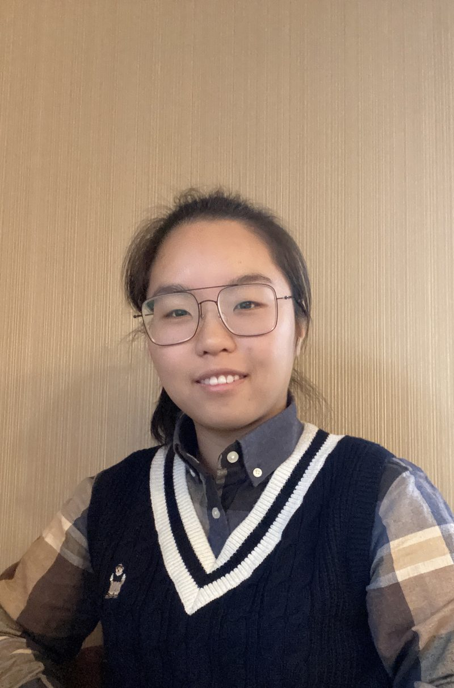

I am a Ph.D. student in Engineering Education (minor in Computer Science & Engineering, AI track) at The Ohio State University, advised by Dr. Adam Carberry. Before entering academia, I spent five years as a consultant in the education sector, recruiting for international schools and K-12 organizations — work that gave me a front-row view of who gets access to quality education and who gets left behind. That question brought me to research.
I study how emerging technologies such as AI and robotics are reshaping engineering and STEM education, from classroom teaching to education policy, with a focus on equity and access. My work combines qualitative and critical quantitative methods with AI-assisted analysis.

How teachers and students take up robotics and AI in engineering and STEM classrooms.
How states, schools, and universities make and implement policy on new technologies, with a focus on equity and access.
Combining qualitative and critical quantitative methods with AI-assisted analysis.